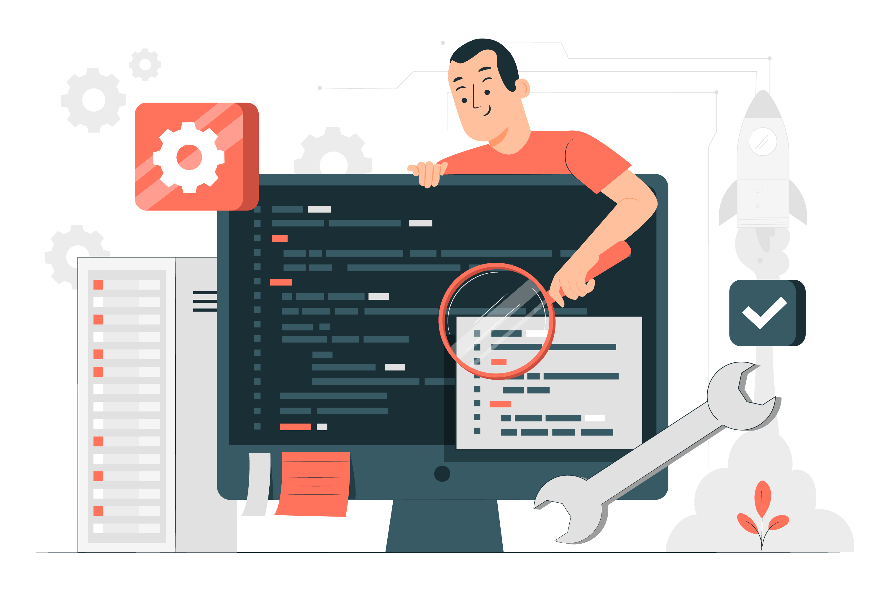
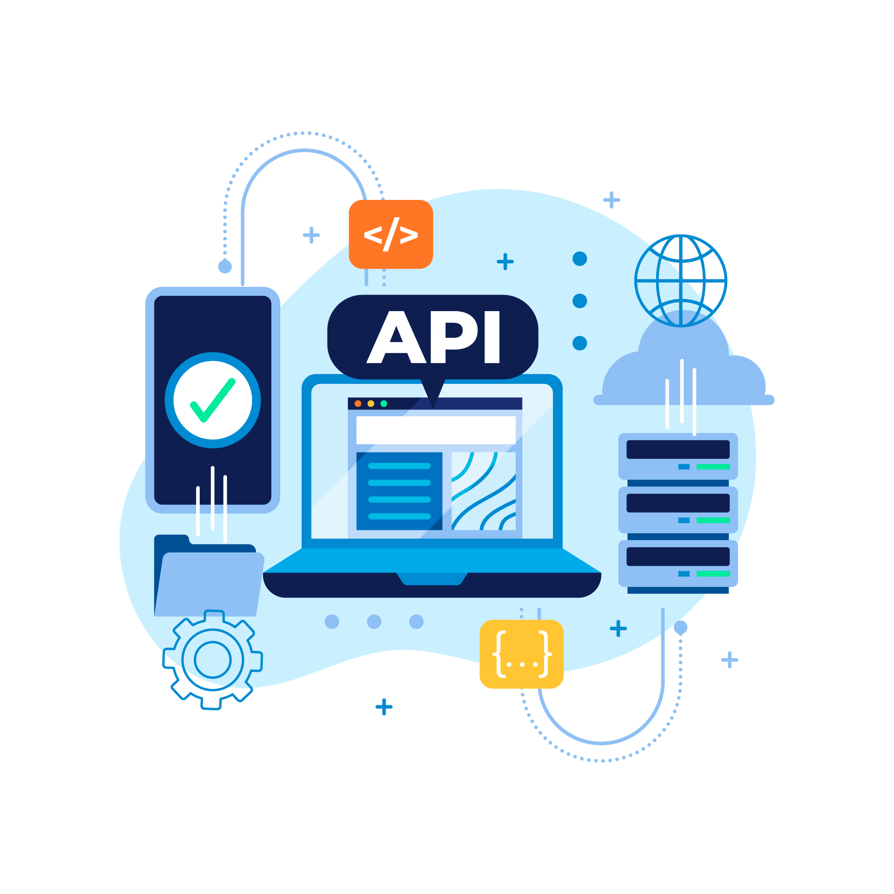

Full stack web development refers to the practice of developing both the front-end (client-side) and back-end (server-side) of a web application or website. A full stack web developer is someone who has the skills and knowledge to work on all aspects of a web project, from designing the user interface to managing the server and database.
Here's a breakdown of the key components of full stack web development:
Front-end development focuses on creating the user interface (UI) and user experience (UX) of a website or web application. It involves using HTML, CSS, and JavaScript to build web pages that users interact with directly in their web browsers. Front-end developers are responsible for designing the layout, implementing responsive design, and ensuring a visually appealing and user-friendly experience.
Back-end development is the server-side of web development. It involves working with server-side technologies to manage data, user authentication, and business logic.Common back-end programming languages and frameworks include Node.js, Python (with frameworks like Django or Flask), Ruby on Rails, Java (with frameworks like Spring), and PHP. Back-end developers handle tasks such as server setup, database management, API development, and server-side scripting.
Databases are essential for storing and retrieving data in web applications. Full stack developers need to understand how to work with databases effectively.Common database systems include MySQL, PostgreSQL, MongoDB (a NoSQL database), and others. Developers design database schemas, write SQL queries, and manage data integrity.
Full stack developers should be proficient in server management and deployment processes.They configure web servers (e.g., Apache, Nginx), set up hosting environments, and deploy their applications to web hosting platforms or cloud services like AWS, Azure, or Heroku.
Building and consuming APIs (Application Programming Interfaces) is a common task in full stack development.APIs enable communication between the front-end and back-end of a web application, as well as integration with external services and third-party APIs.
Full stack developers use version control systems like Git to manage code changes collaboratively and ensure codebase integrity.
Understanding DevOps principles and CI/CD (Continuous Integration and Continuous Deployment) pipelines is becoming increasingly important for full stack developers to automate testing and deployment processes.
Full stack web developers are versatile professionals who can work on all layers of a web application, from designing the user interface to implementing complex server-side logic and managing databases and infrastructure. Their ability to work across the stack makes them valuable team members in web development projects.
Front End
Front-end web development, often referred to simply as "front-end development," is the practice of creating the user interface and user experience of a website or web application. It involves designing and implementing the elements that users interact with directly in their web browsers, such as web pages, forms, buttons, navigation menus, and multimedia content. Front-end developers are responsible for ensuring that a website or web application looks and functions as intended, providing an enjoyable and responsive experience for users.
Key aspects of front-end web development include:
HTML (Hypertext Markup Language): HTML is the foundation of web development. It is used to structure the content of web pages, defining headings, paragraphs, lists, links, and other elements.
CSS (Cascading Style Sheets): CSS is used to control the presentation and layout of web pages. It allows front-end developers to specify the visual styling of HTML elements, such as fonts, colors, spacing, and positioning.
JavaScript: JavaScript is a programming language that adds interactivity and dynamic behavior to web pages. Front-end developers use JavaScript to create interactive features like sliders, forms with real-time validation, and responsive navigation menus.
Responsive Web Design: Front-end developers need to ensure that websites and web applications are responsive, meaning they adapt to different screen sizes and devices (e.g., desktops, tablets, smartphones) to provide a consistent user experience.
Cross-Browser Compatibility: Web developers must ensure that their front-end code works consistently across different web browsers (e.g., Chrome, Firefox, Safari, Edge) to reach a broad audience.
Web Performance Optimization: Front-end developers optimize the performance of websites by minimizing page load times and optimizing assets (e.g., images, scripts) to enhance the user experience.
Accessibility: Ensuring that web content is accessible to individuals with disabilities is a crucial aspect of front-end development. Developers must follow web accessibility standards (e.g., WCAG) to make websites usable by a wide range of users.
Version Control: Front-end developers often use version control systems like Git to track changes to their code and collaborate with other developers.
Front-End Frameworks and Libraries: Many front-end developers use frameworks and libraries such as React, Angular, or Vue.js to streamline development and build complex web applications more efficiently.
Testing and Debugging: Front-end developers test and debug their code to identify and fix issues that may affect the user experience.
Front-end development is a critical part of the web development process, working in conjunction with back-end development (server-side programming) to create fully functional web applications. Together, front-end and back-end development ensure that websites and web applications work seamlessly to deliver content and services to users.

Back End
Backend web development refers to the process of creating and maintaining the server-side of a website or web application. It involves all the behind-the-scenes work that enables the frontend (the part of a website that users interact with) to function properly. The backend is responsible for managing and processing data, ensuring security, and handling server-side operations.
Here are some key aspects of backend web development:
Server Management: Backend developers work with web servers to ensure they are properly configured, secure, and capable of handling incoming requests. This may involve setting up and maintaining servers using technologies like Apache, Nginx, or cloud-based services like AWS, Azure, or Google Cloud.
Database Management: Backend developers design and manage databases to store and retrieve data efficiently. They use database management systems (DBMS) like MySQL, PostgreSQL, MongoDB, or others to store and organize data.
Server-Side Programming: Backend developers write code in languages such as Python, Ruby, PHP, Java, Node.js, or C# to build the logic that handles requests from the frontend, processes data, and communicates with the database.
API Development: Backend developers often create APIs (Application Programming Interfaces) that allow communication between the frontend and backend. APIs define the rules for how different software components can interact with each other.
Security: Backend developers are responsible for implementing security measures to protect the application from various threats, including SQL injection, cross-site scripting (XSS), and data breaches. They may implement authentication, authorization, and encryption to safeguard sensitive data.
Performance Optimization: Backend developers optimize the performance of web applications by fine-tuning server configurations, optimizing database queries, and implementing caching mechanisms to reduce response times.
Scalability: As web applications grow in popularity and user base, backend developers need to ensure that the infrastructure can scale to handle increased traffic. This often involves load balancing, horizontal scaling, and other strategies.
Maintenance and Bug Fixing: Backend developers are responsible for maintaining and updating the server-side code, fixing bugs, and addressing any issues that arise during the lifecycle of the application.
In summary, backend web development focuses on the server-side aspects of web applications, including server management, database management, server-side programming, security, performance optimization, scalability, and ongoing maintenance. Backend developers work in collaboration with frontend developers to create functional, secure, and responsive web applications.
Data Base
In web development, a database is a structured collection of data that is organized and stored electronically, typically in a way that makes it easy to access, manage, and retrieve information. Databases play a crucial role in web development because they enable websites and web applications to store and retrieve data efficiently.
Here are some key aspects of databases in web development:
Data Storage:Databases store various types of data, such as text, numbers, dates, images, and more. This data can include user information, product details, content for a website, and much more.
Structured Data:Data in a database is organized into tables or collections, with each table or collection containing related information. This structured approach makes it easier to manage and query the data.
Data Retrieval:Web developers use database queries to retrieve specific data from the database based on criteria like user input or system requirements. This data is then displayed on web pages or used to perform various operations.
Data Manipulation:Databases allow for data manipulation, including adding, updating, and deleting records. This is important for maintaining the accuracy and relevance of the information stored.
Data Security:Databases provide mechanisms for controlling access to data, ensuring that only authorized users can view, modify, or delete information. This is critical for protecting sensitive data.
Scalability:Databases can be designed to scale as a website or application grows. This involves optimizing the database structure and using techniques like replication and sharding to handle increased data loads.
Database Management Systems (DBMS):A database management system is software that manages and interacts with the database. Popular DBMS options for web development include MySQL, PostgreSQL, MongoDB, Microsoft SQL Server, and others. Each DBMS has its own strengths and use cases.
APIs:Web developers often use programming languages and frameworks to interact with databases. They use APIs (Application Programming Interfaces) provided by DBMSs or use Object-Relational Mapping (ORM) libraries to simplify database interactions.
Normalization:Database designers employ normalization techniques to eliminate redundancy and maintain data integrity. This involves breaking data into smaller tables and establishing relationships between them.
Back-End Development:Databases are primarily a part of the back-end development stack in web development. The back-end server communicates with the database to fetch or store data based on requests from the front-end (user interface).
Common use cases for databases in web development include user authentication, content management, e-commerce, social media platforms, and more. Understanding how to design and work with databases is an essential skill for web developers, as it directly impacts the performance, reliability, and functionality of web applications.
Server Management and Deployment
Server management in web development refers to the process of overseeing and maintaining the hardware and software infrastructure that hosts a website or web application.
Here are five key points to understand about server management:
Deployment and Configuration:Server management involves setting up and configuring web servers, databases, and other necessary software components to ensure the proper functioning of a website or web application.
Security:It includes implementing security measures such as firewalls, encryption, and regular software updates to protect the server from vulnerabilities and potential cyber threats.
Monitoring and Performance Optimization:Continuous monitoring of server performance, resource usage, and website uptime is essential. Server administrators optimize server performance by tuning server settings and resolving any issues that may arise.
Backup and Recovery:Server managers create and maintain backup systems to safeguard data in case of hardware failures, data corruption, or other unexpected events. They also develop recovery plans to minimize downtime.
Scaling:As a website or application grows, server management involves scaling resources up or down to accommodate increased traffic and user demands. This can include adding more servers, load balancing, and optimizing resource allocation.
Effective server management is crucial to ensure the reliability, security, and performance of web applications and websites, allowing them to run smoothly and serve users efficiently.

API (Application Programming Interface)
API (Application Programming Interface) development in web development refers to the process of creating and maintaining interfaces that allow different software applications to communicate and interact with each other over the internet.
Here are five key points about API development:
Interoperability:APIs enable different software systems to work together seamlessly, regardless of their underlying technologies or programming languages. This promotes interoperability and data sharing.
Data Exchange:APIs facilitate the exchange of data and services between web applications. They define the rules and protocols for requesting and receiving data, making it easier to access and utilize information from various sources.
Scalability:Well-designed APIs can handle a high volume of requests, making them essential for scalable web applications. Developers can build and expand their applications by integrating third-party APIs for additional functionality.
Security:API development involves implementing security measures such as authentication and authorization to ensure that data is accessed only by authorized users and to protect against potential security threats.
Versioning and Documentation:Proper API development includes versioning to ensure backward compatibility with existing applications and documentation that provides clear instructions on how to use the API, making it easier for developers to integrate it into their projects.
APIs are fundamental to modern web development and are used extensively in creating web services, mobile apps, and other software applications that rely on data and functionality from external sources.
Version control
Version control in web development is a crucial system for managing and tracking changes to code and project files.
Here are five key points about version control:
History Tracking:Version control systems (e.g., Git) keep a detailed history of all changes made to code and files, including who made the changes and when.
Collaboration:It enables multiple developers to work on the same project simultaneously without overwriting each other's work. Changes can be merged together.
Branching:Developers can create branches to work on specific features or fixes independently, making it easier to manage different aspects of a project.
Revert and Rollback:It allows developers to revert to previous versions of the project in case of errors or bugs, ensuring code stability and reliability.
Backup and Recovery:Version control serves as a backup system, protecting against data loss or corruption by maintaining a complete history of the project. It aids in recovering from various issues quickly.
DevOps and CI/CD
DevOps and CI/CD (Continuous Integration/Continuous Delivery) are critical practices in web development.
Here are six key points to understand these concepts:
DevOps (Development and Operations):DevOps is a set of practices that aim to bridge the gap between software development (Dev) and IT operations (Ops).It promotes collaboration, automation, and monitoring throughout the software development lifecycle.DevOps helps teams deliver applications more efficiently and with higher quality by automating manual tasks and fostering a culture of continuous improvement.
CI (Continuous Integration):CI is the practice of automatically integrating code changes from multiple contributors into a shared repository multiple times a day.It involves automated testing and code validation to ensure that new code doesn't introduce errors or conflicts with existing code.CI helps identify and fix issues early in the development process, leading to faster and more reliable software delivery.
CD (Continuous Delivery/Continuous Deployment):CD encompasses both Continuous Delivery (CD) and Continuous Deployment (CD).Continuous Delivery involves automatically building, testing, and packaging the application so that it's always in a deployable state. However, deployment to production is a manual decision.Continuous Deployment goes a step further by automatically deploying code changes to production as soon as they pass automated tests. This is common in highly automated, mature DevOps environments.
Automation:Automation is a core principle of both DevOps and CI/CD. It involves automating repetitive tasks like code building, testing, and deployment.Automation reduces human error, speeds up the development process, and ensures consistency in the deployment pipeline.
Feedback Loop:DevOps and CI/CD emphasize the importance of a feedback loop, which includes monitoring, logging, and user feedback.Teams collect data on how applications perform in production and use that feedback to make continuous improvements.
Culture and Collaboration:Adopting DevOps and CI/CD is not just about tools and processes; it's also about fostering a culture of collaboration, communication, and shared responsibility among development and operations teams.Successful implementation requires breaking down silos and promoting a "DevOps culture" throughout the organization.
These practices enable web development teams to deliver high-quality software faster, with fewer errors, and with the ability to adapt quickly to changing requirements and user needs.
Overview
Full stack web development encompasses the comprehensive skill set required to create a fully functioning web application. Full stack web developers, equipped with a diverse range of proficiencies, are pivotal in designing, building, and maintaining web projects. The discipline is divided into several key domains.
Front-end development centers on crafting the user-facing aspect of a website, employing HTML, CSS, and JavaScript to construct visually appealing, responsive interfaces. Back-end development operates on the server-side, utilizing various programming languages and frameworks to handle data management, user authentication, and core functionality.
Database management is essential for storing and retrieving data, with developers needing to master database systems such as MySQL and MongoDB. Server management and deployment expertise are crucial for configuring web servers and deploying applications to hosting platforms or the cloud.
API development facilitates communication between front-end and back-end components, allowing integration with external services. Version control systems like Git enable collaborative code management, while knowledge of DevOps and CI/CD pipelines streamlines testing and deployment.
Full stack web developers possess the versatility to navigate every layer of web application development, making them invaluable contributors to web projects. Their multifaceted skill set empowers them to create seamless, end-to-end solutions in the ever-evolving landscape of web development.